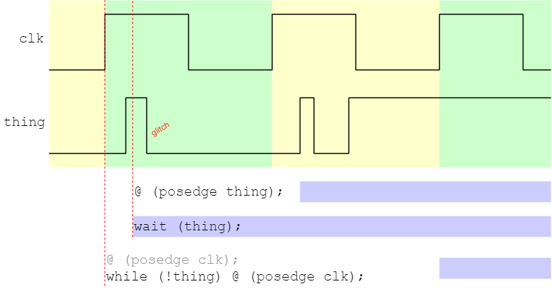

This is a little bonus page which looks at some ways of timing control signals, particularly in Verilog simulation. Some ways of expressing intent are more robust than others!
A ‘glitch’ is a short change in the state of a
signal which was not intended as part of a design. Here
‘short’ means significantly less than a clock cycle. In
an implemented circuit glitches are generated by
signal races through gates; they appear when the logic is
mapped into gates (or similar) either by a designer or – more
commonly – by the logic synthesis.
As written in behavioural HDL there is (usually) no delay expressed in
this logic so races don't happen so glitches don't appear.
Simulation is normally conducted on a behavioural design. Ideally the same tests can be applied post-synthesis to the design and should still run. This involves ‘extracting’ the synthesized netlist and reapplying the tests. There are now likely to be glitches on some signals.
Glitches are not usually a functional† problem
– at least in synchronous circuits. The clocked
registers prevent glitch propagation and the clock period allows the
circuit to ‘settle’ before proceeding.
Signals should only be regarded as stable and sampled at
active clock edges.
Glitches on general data signals – such as adder operands – rarely pose a problem. However glitches on control signals can catch out the unwary.
†The added transitions will waste some energy but that's a problem for a different page.
When driving a Verilog simulation there are different instructions which can be applied to detect whether something has happened. Let's say we want to detect if an operation has finished by checking a ‘busy’ signal.
@ (negedge busy) …
wait (!busy);
These will both detect a low on the busy signal, as the next falling transition or the level (including immediately if there is a ‘low’ level when executed) but they will also be passed if there is a glitch which would not be seen in a real circuit. Possibly the most likely effect would be the apparent failure of a formerly working verification test. 😞
This disappointment can be overcome by synchronising the test to the clock in the same way as the registers will. Thus:
@ (posedge clk) if (!busy) …
while (busy) @ (posedge clk) …
the latter assuming that the time is already at a(n active) clock edge on entry.
The figure illustrates the timing where the different statements are executed (the bottom line is tacitly assumed to be already synchronised to clk, hence the grey statement). In each case the solid blue bars show when execution of that ‘thread’ continues.
To detect if a signal (or bus) has changed, similar ploys can be used.
always @ (posedge clk)
begin
changed <= (data != old_data);
old_data <= data;
end
always @ (posedge clk)
begin
busy_end <= (!busy && was_busy); // Makes a pulse
was_busy <= busy;
end
By following this (type of) strategy you can make your tests more robust.
Back to simulation time